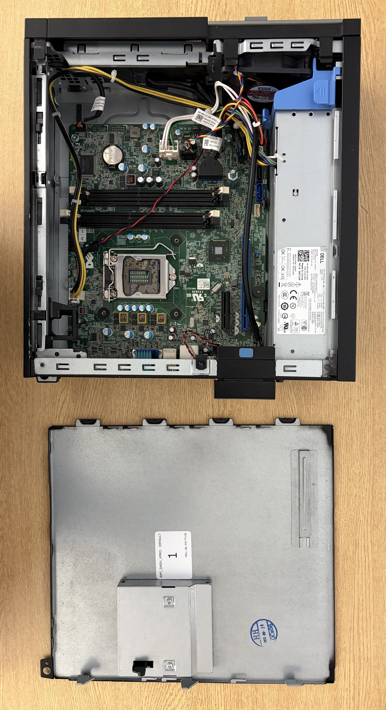

J'ai monté un ordinateur au début du semestre, mais il me manquait la pile bouton.
J'ai démontré mes connaissances en parties matérielle alors que je montait l'ordinateur car j'ai reconnu toutes les composantes de l'ordinateur et j'ai trouvé le problème qui l'empêchait de s'allumer. J'ai réussi, mais il me manquait une pile: celle qui alimente le BIOS. Sinon, le reste des composantes ont été branchées correctement et l'ordinateur a pu démarré (avec le fail du manque de pile bouton).
J'ai appris durant l'atelier l'applications des différentes connections et comment correctement brancher les composantes afin de faire fonctionner l'ordinateur sans problème.